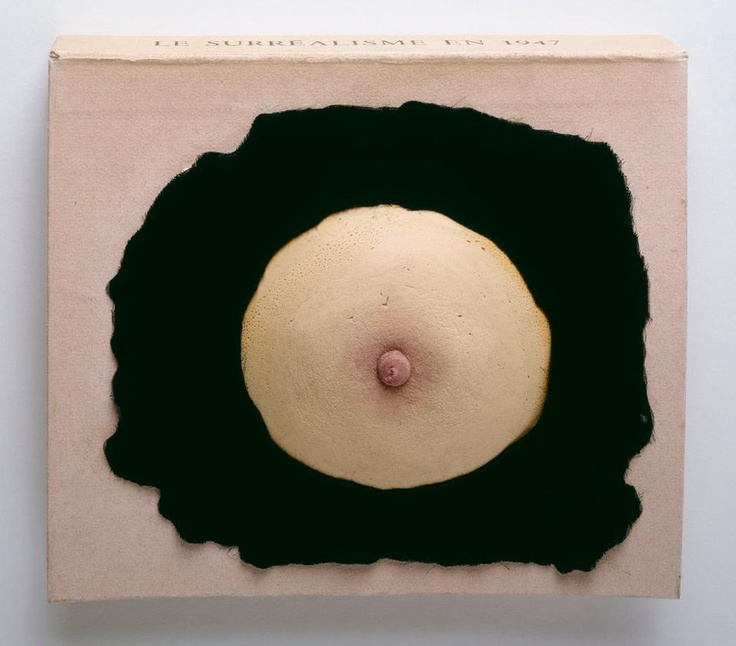

Prière de nourriture (Modlitba za jídlo)
Jde o palačinku s marmeládou uprostřed, položenou na černém kusu látky, na části kartónové krabice z roku 2023

Jde o ženské prso z pěnové gumy vložené do kousku černého sametu na obalu surrealistického katalogu z roku 1947
Jde o palačinku s marmeládou uprostřed, položenou na černém kusu látky, na části kartónové krabice z roku 2023
Původně jsme plánovali zpracovat jiné dílo, ale shodli jsme se, že věsit lopatu ze stropu nemusí být zrovna jednoduché, tak jsme si vybrali něco, na co máme prostředky.
David chtěl prso vytisknout 3D tiskem a poté ho namalovat, ale to se nám nechtělo, tak jsme použili palačinku, protože vypadá texturou podobně jako prso, které chceme imitovat.
David přinesl krabici, Šimon látku a Erik udělal palačinku a přinesl marmeládu (za 40 Kč).
David s Erikem vypracovali veledílo a Šimon udělal prezentaci.